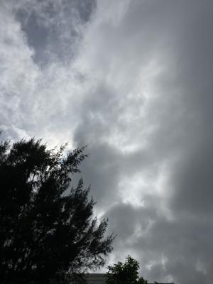
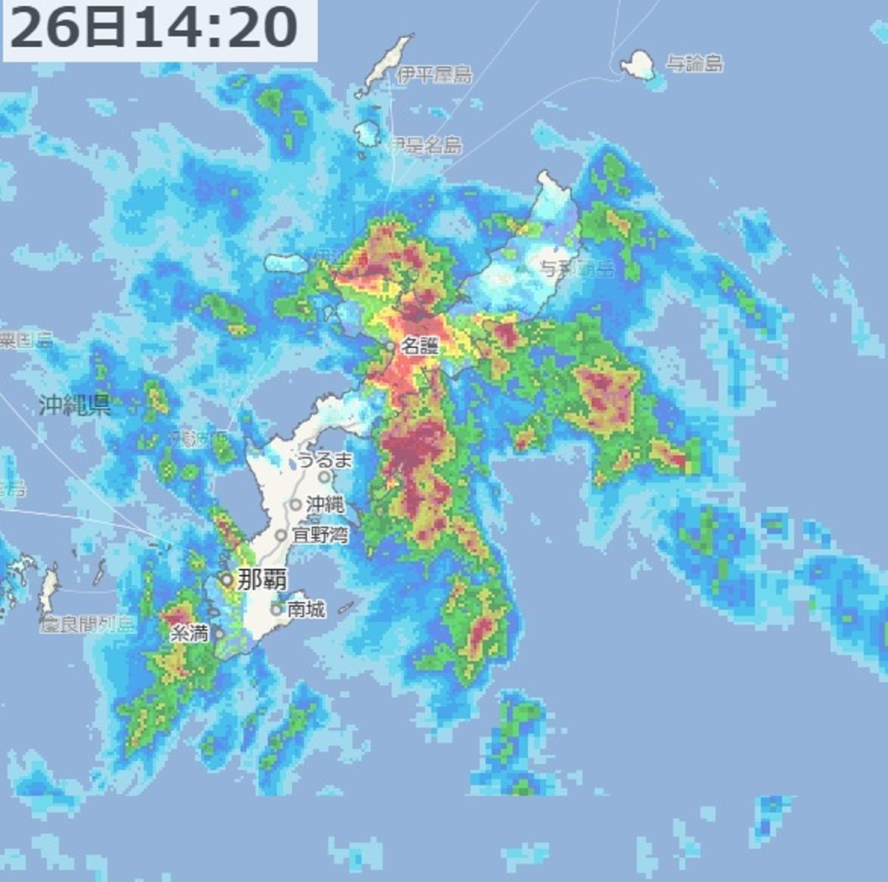

うるがいの話 ある日
最新: 台風８号【うるがいの話 ある日】とは 一日だけのプログです
『うるがいの話』の最新一日だけのプログで、通信料が少なく経済的だ。カニの画像をクリックすると全ての日付が載る『うるがいの話』サイトを表示します
|
|
【うるがいの話】 うるがい(ｳﾙｶﾞｲ urugai)とは、『もずくがに』の名前でとても大きくなります。 |
|---|---|
|
|
【カミマヤーの話】 猫のことを方言でマヤーといいます。カミマヤー（kamimayaa）とは、神の猫のことです。 |
|
【たながぁの音楽】 たながぁ（ﾀﾅｶﾞｰ tanagaa）とは手長えびのことで、何種類かあり大きいのは車 エビぐらいになります。 |

|
【ぶながぁの話】 ぶながぁ(ﾌﾞﾅｶﾞｰ bunagaa)とは、赤い髪の毛、赤い身体、そして身長は１ｍ２０ｃｍ ぐらい、川の蟹を食べているの目撃された。場所は沖縄県国頭郡大宜味村のと ある村僕の隣近所に住んでいる爺さんから、聞いた話です。 |
|
|
【ギーマの話】 ギーマ(giima)とは、山原の里山に咲くスズランに似た、 花を付けます。実は食べられます、 気が付くと口の周りが紫になっています。 |
2025年07月26日 (土）台風８号
15:14

『台風８号は２６日午前９時に熱帯低気圧に変わり・・』、午前中
までは、雨は特にだったが、突然大雨が降った。名護は、オオ大雨
である。

６頁もある工工四をプログラムで作成し、ユーチューブ動画にアッ
プしました。これをみてどう思うのでしょう、どう見ても手作業で
作成したとは思わないでしょう。作成は、高速ＰＣ３を使いプログ
ラムで行うのでマー、そんな大変ではないのです。ただ、検証作業
が、パソコンの二つのモニタを見ながら行うのですが、大変です軽
く数時間かかります。さすがですね、プログラムなので工工四の品
質は良く、手作業で勘所を打ち込んだ楽譜データに誤りが、今回は
５ヶ所見つかりました。訂正して、再アップしました。すでにある
ユーチューブ動画のすべての工工四を反映させるとすると、数ヶ月
かかりそうです。やるべきなんでしょうか・・・・。
音符が一番多そうで、三線実演のベンチャーズのパイプラインの動
画で工工四が欲しいとあったので、プログラムの検証も兼ねて作成
しました。興味があれば見てください、三線１と三線２の二つです
ネ、手作業では無理でしょう。
『ベンチャーズ パイプライン 三線』の工工四(pdf)は
三線1のpdf
三線2のpdf